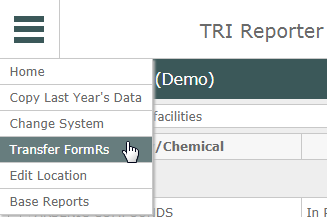
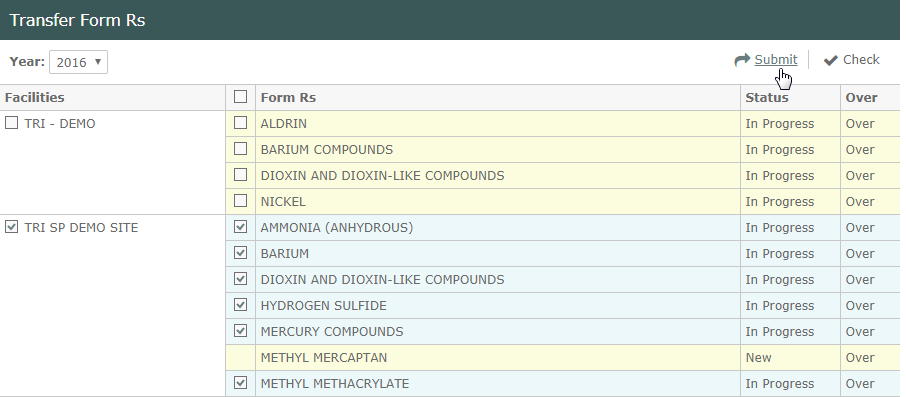
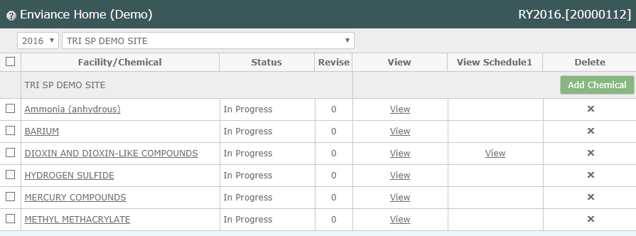

If you maintain TRI data in the Management System, you can transfer the data to EMS TRI Reporter, if the system is correctly set up with the required tags.
For details on setting up the System Model for TRI reporting, see Tagging Data for TRI Reporter.
Note: You can download the document here: TRI Data Tagging.
From the System Model, go to TRI Reporter by selecting TRI from the right-click menu on Reports in the system model tree.
To transfer data:
Select a facility for which you want to transfer data from the drop-down list, or choose "Select all facilities".
Select Transfer FormRs from the main menu button (top left).

The transfer screen shows the data available for transfer to TRI Reporter.
Check the boxes to select the chemical data to transfer. To select all data for all facilities, check the box at the top of the checkbox column. To select all data for a single facility, check the box for the facility.

Click Submit.
After the data is transferred, the Home page will shows the new FormRs.

All FormRs will need to be opened and reviewed to validate them before submitting. See Form Validation.